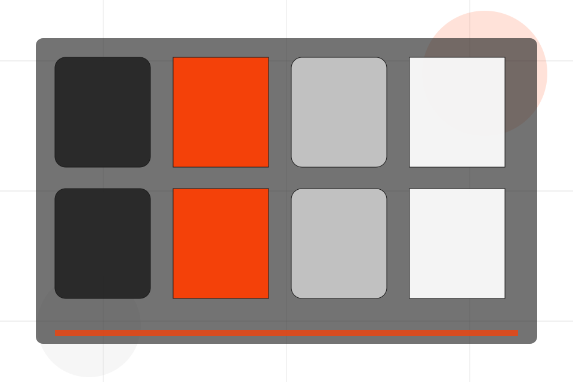
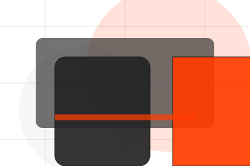
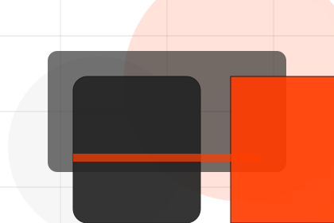
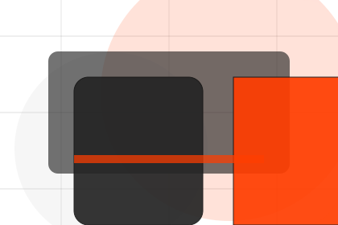
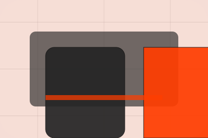

FAQ / 01
FAQ by Pulse
FAQ shaped for sports, fitness & recreation decisions.
FAQ opens as a clear sports decision hub: what Pulse offers, who it helps, why it matters, and which route to take first.
The first screen combines positioning, proof, primary action, and fast internal navigation, so people can act immediately or compare the rest of the faq route with context.
Sports scopeCompare optionsRequest advice

FAQ / 02
Questions before you join a class
Level handles buying doubts directly so visitors can understand timing, fit, limits, and the safest next step.
Answers are short by design: enough to remove hesitation, not so much that the page turns into documentation before the visitor can act.
Explore FAQPulse structures level around question, answer, and a clear next route so visitors can compare the block quickly before they join a class.
Join ClassFAQ / 04
Questions before you join a class
Injuries handles buying doubts directly so visitors can understand timing, fit, limits, and the safest next step.
Answers are short by design: enough to remove hesitation, not so much that the page turns into documentation before the visitor can act.
Explore FAQQuestion
Injuries gives the page a specific angle instead of repeating the navigation label.
Answer
The performance program cards show what to compare, what to avoid, and what matters most for sports, fitness & recreation visitors.

Next Step
The final cue points to a useful internal route so the section keeps the journey moving.
FAQ / 05
Questions before you join a class
Policies handles buying doubts directly so visitors can understand timing, fit, limits, and the safest next step.
Answers are short by design: enough to remove hesitation, not so much that the page turns into documentation before the visitor can act.
Explore FAQPolicies gives the page a specific angle instead of repeating the navigation label.
The performance program cards show what to compare, what to avoid, and what matters most for sports, fitness & recreation visitors.
The final cue points to a useful internal route so the section keeps the journey moving.
FAQ / 06
Compare scope and terms
Payments makes commercial comparison easier by showing fit, scope, and terms before sports visitors ask for the next step.
The layout keeps price-sensitive decisions honest: it separates starting scope, fuller delivery, and ongoing support so the visitor can ask a sharper question.
Explore FAQ- 01
Fit
Who the offer is for, which scope it suits, and when a different route may be better.
- 02
Scope
What is included clearly enough for sports, fitness & recreation visitors to compare value without hidden jargon.
- 03
Terms
The practical details that should be confirmed before someone asks to join a class.
FAQ / 07
Questions before you join a class
Cancellations handles buying doubts directly so visitors can understand timing, fit, limits, and the safest next step.
Answers are short by design: enough to remove hesitation, not so much that the page turns into documentation before the visitor can act.
Explore FAQPulse structures cancellations around question, answer, and a clear next route so visitors can compare the block quickly before they join a class.
Join ClassFAQ / 08
Questions before you join a class
Trial handles buying doubts directly so visitors can understand timing, fit, limits, and the safest next step.
Answers are short by design: enough to remove hesitation, not so much that the page turns into documentation before the visitor can act.
Explore FAQ
Question
Trial gives the page a specific angle instead of repeating the navigation label.
FAQ / 09
Compare service routes
Support explains the practical scope, best-fit situations, and expected outcome so sports visitors can compare options without decoding jargon.
The section keeps the offer concrete: what is included, who it is best for, what decision it supports, and which linked route gives the deeper detail.
Open ContactBest Fit
Who should use support and when it belongs in the faq journey.

What Changes
The practical benefit visitors should expect after choosing this route.
Deeper Route
Where to compare details, pricing, support, or contact options before committing.
FAQ / 10
Join Class
Pulse closes the faq route with a clear action, a quick reminder of the value, and a low-friction way to join a class.
Visitors who are ready can use the primary action. Visitors who are still comparing can scan the section links, proof, and support routes before they join a class.
Join ClassThe final block keeps the choice simple: act now, compare one more proof route, or send enough detail for a focused response.
Join Classprogress and belonging
Join Class
A fitness site with athlete-scale hero, program cards, coach proof, schedule filters, and membership CTAs. FAQ ends with a direct path to join a class, plus enough context for visitors who still need to compare.

Join ClassImportant notes before you act
Fitness guidance should be adapted to health status and professional advice where needed.